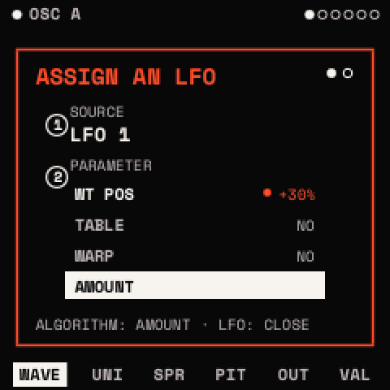
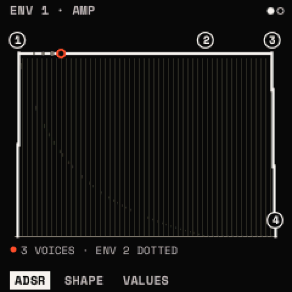
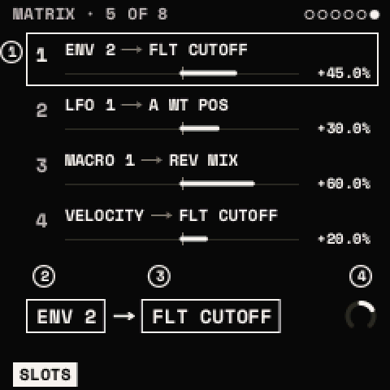

Envelopes, LFOs and modulation
ENV 1 shapes every note's level. ENV 2, the two LFOs, the macros and the MIDI controllers move other parameters through the matrix: eight slots, each a source, a destination and an amount. All of it is saved with the sound.
How to
Put a modulator on a knob

- Go to the page with the parameter you want to move, such as FILTER's TONE page.
- Press LFO twice for an LFO, or ENV twice for an envelope or a macro. The assign window opens.
- Turn KNOB 1 to choose the source and KNOB 2 to choose the parameter. Parameters marked NO can't be modulated.
- Turn ALGORITHM to the second page. Turn KNOB 2 to set the AMOUNT (−100 to +100 %) and KNOB 1 to set the POLARITY.
- Press any button to close it. OCT− in the window removes the source from the parameter.
Try sources quickly (the MOD layer)
- Hold REC. The screen lists the page's four parameters.
- Press a white key to choose a source; the screen names each key's source (F3 is ENV 1, A3 LFO 1, C4 MACRO 1).
- Turn a knob to set that source's depth on its parameter. Let go of REC to finish (REC + OCT+ keeps the layer open).
Draw an LFO
- Press LFO. The POINTS page shows the shape as points.
- KNOB 1 chooses a point, KNOB 2 moves it in time, KNOB 3 up or down, KNOB 4 bends the line after it.
- LFO + OCT+ adds a point; LFO + OCT− deletes the one chosen (up to 16 points; the end points stay). Editing a built-in shape turns it into DRAWN.
Envelopes

ENV opens ENV 1 (the amp) and ENV 2 (free to assign). Times run from 1 ms to 30 s.
| Page | Parameter | What it does |
|---|---|---|
| ADSR | ATTACK, DECAY, SUSTAIN, RELEASE | Rise, fall to the sustain level, level held, fall after release |
| SHAPE | HOLD | Time held at the top before DECAY |
| A CURVE, D CURVE, R CURVE | Each stage's curve: − slow then fast, + fast then slow |
ENV 1's SUSTAIN starts at 100 %, ENV 2's at 0 %. A sustain pedal (MIDI CC 64) holds the releases.
LFOs
LFO opens LFO 1 and LFO 2. The top line shows the rate and mode.
| Page | Parameter | What it does | Range |
|---|---|---|---|
| POINTS | POINT, TIME, LEVEL, CURVE | Edit the shape (above) | |
| SHAPE | SHAPE | SINE, TRIANGLE, SAW UP, SAW DOWN, SQUARE, S&H, SMOOTH, STEP 4, STAIRS, PULSE, BOUNCE, TRAPEZ, DRAWN | |
| SYNC | FREE: RATE in Hz; FIXED: RATE as a note value | ||
| RATE | Speed | 0.01–40 Hz, or 8 BAR … 1/32 | |
| MODE | FREE (one phase for all voices; PLAY restarts it on the beat), RETRIG (per note), ENV (one cycle, then hold) | ||
| TIME | DELAY, RISE | Wait, then fade in, after each note | OFF – 30 s |
| PHASE | Start point | 0–360° | |
| SMOOTH | Rounds the corners | 0–100 % |
Tip: delayed vibrato: LFO 1 SINE at about 5 Hz, MODE RETRIG, DELAY 300 ms, RISE 500 ms, onto both oscillators' FINE with a small amount.
The matrix

EDIT, then SELECT to MATRIX. KNOB 1 chooses a slot (1–8), KNOB 2 its SOURCE, KNOB 3 its DEST (only parameters that can be modulated; an effect's only while it is in the chain), KNOB 4 its AMOUNT. At 100 % a source can sweep the whole range.
| Source | Range | What it is |
|---|---|---|
| ENV 1, ENV 2 | 0…1 | the envelopes, per note |
| LFO 1, LFO 2 | −1…+1 | the LFOs |
| VELOCITY | 0…1 | the note's velocity |
| NOTE | −1…+1 | the key's position, low to high |
| RANDOM, ALTERNATE | −1…+1 | a new random value, or a flip, at each note |
| MACRO 1–4 | 0…1 | the macros |
| MOD WHEEL, EXPRESSION | 0…1 | MIDI CC 1 and CC 11 (or PERFORM's wheel) |
| BEND | −1…+1 | pitch bend |
| AFTERTOUCH | 0…1 | MIDI channel aftertouch |
| FIXED | a constant offset |
Polarity. A unipolar source (0…1) pushes a parameter one way; a bipolar one (−1…+1) swings it both ways. Each slot's POLARITY, set in the assign window, swaps this: an LFO made UNIPOLAR only opens a filter from where you set it.
A slot onto an effect, a macro or VOLUME follows the newest note's envelopes and LFOs, since the effects are shared by all voices. VALUES pages show the range the modulation takes each parameter to.
Macros
MACRO 1–4 are HOME's four knobs, FX held (MACROS), and MIDI CC 16–19. Each moves whatever its matrix slots point at, and a macro can itself be modulated. INIT has MACRO 1–4 in its first four slots, waiting for a destination.
Tip: one macro, several slots: MACRO 1 onto CUTOFF, RESO and the reverb's MIX turns HOME's KNOB 1 into a single "open it up" control.